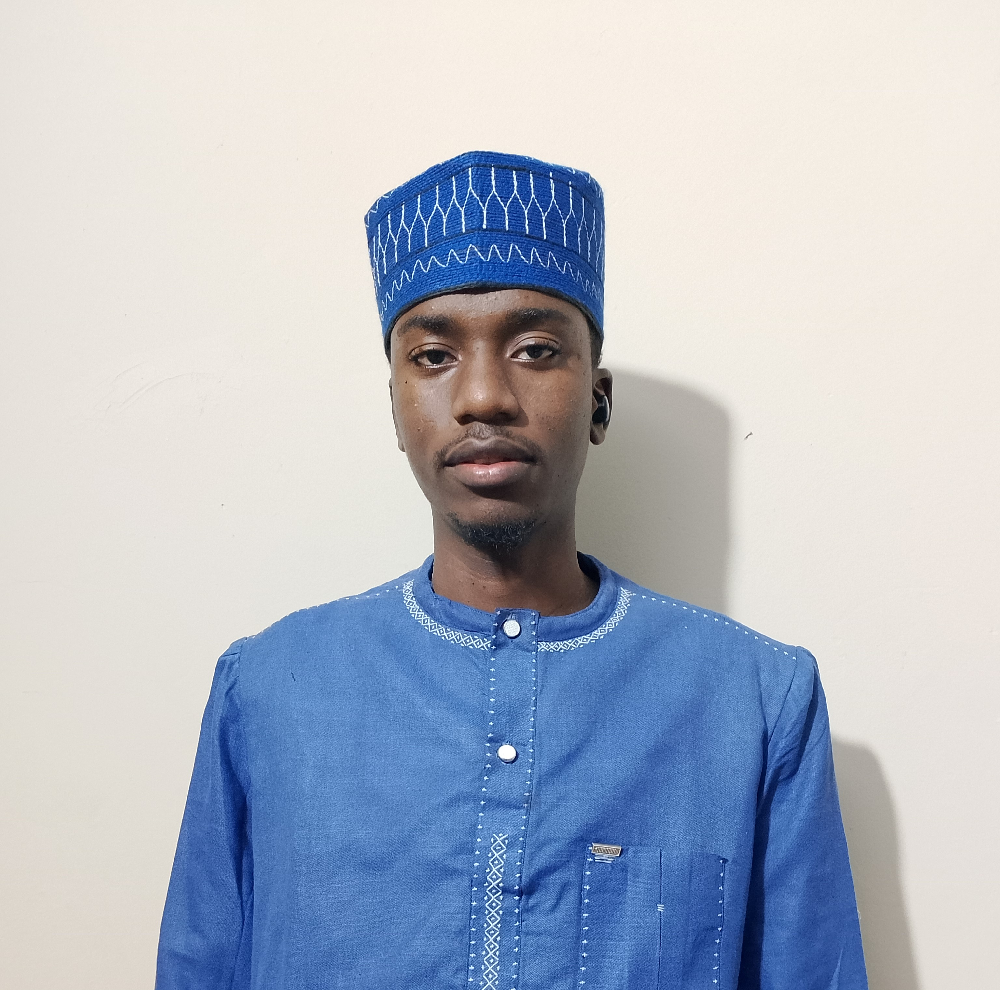

AMADOU SEYE
Technicien superieur en Reseau Telecom
 Keur Mbaye Fall
Keur Mbaye Fall
 77 410 68 88
77 410 68 88
 amadouseye444@gmail.com
amadouseye444@gmail.com
 EXPERIENCES PROFESSIONNELLES
EXPERIENCES PROFESSIONNELLES
- 2022-2024 Maintenance informatique
 COMPETENCES TECHNIQUES
COMPETENCES TECHNIQUES
- Configuration et gestion des adresses IPv4
- Connaissance des protocoles réseaux (TCP/IP, UDP, HTTP/HTTPS, FTP, DNS, DHCP)
- Utilisation d’outils de diagnostic (ping, traceroute, Wireshark, nmap)
- Configuration et administration des switches & routeurs (Cisco, TP-Link)
- Surveillance et supervision réseau (Nagios)
COMPETENCES FONCTIONNELLES
- Travail en équipe (collaboration, communication, coordination)
- Résolution de problèmes et prise de décision rapide
- Organisation et rigueur dans le travail
 ETUDES
ETUDES
- 2024 - Licence Reseau a l'Universite Iba Der Thiam de Thies
- 2019 - Baccalaureat S2 au Lycee de Mbao
LANGUES
- Francais
- Anglais